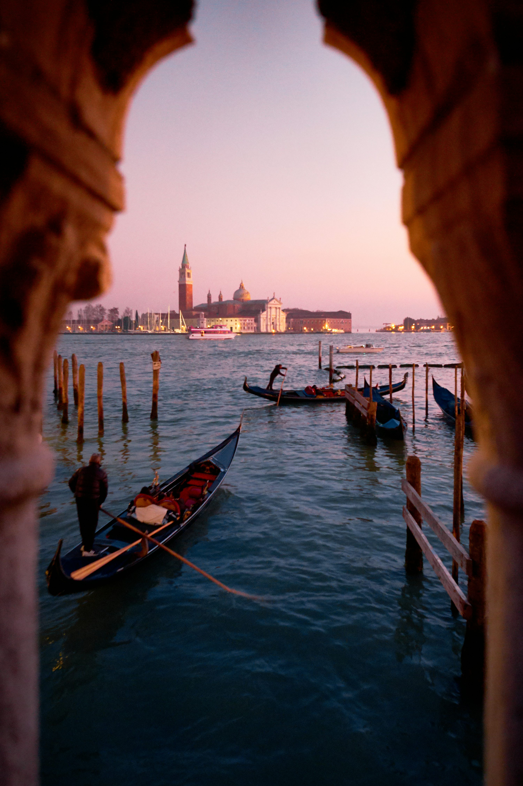

Preencha as informações sobre um lugar do mundo que você gostaria de visitar.
Nome: Júlia Watanabe
Turma: 2ºE

Nome do lugar: Veneza, Itália
Por que quero conhecer esse lugar?
Conhecer Veneza é uma experiência única porque a cidade é diferente de qualquer outra no mundo. Construída sobre canais em vez de ruas, ela encanta com suas gôndolas, pontes históricas e arquitetura antiga que contam séculos de história. Além disso, lugares famosos como a Praça de São Marcos e o Grande Canal proporcionam paisagens inesquecíveis. Visitar Veneza é mergulhar em arte, cultura e romance em um cenário verdadeiramente especial.